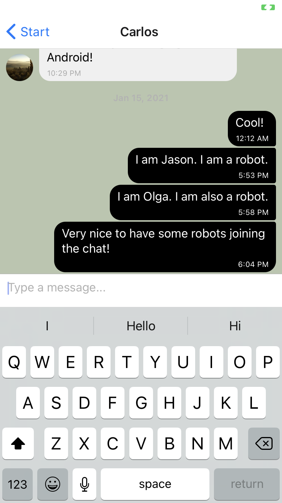
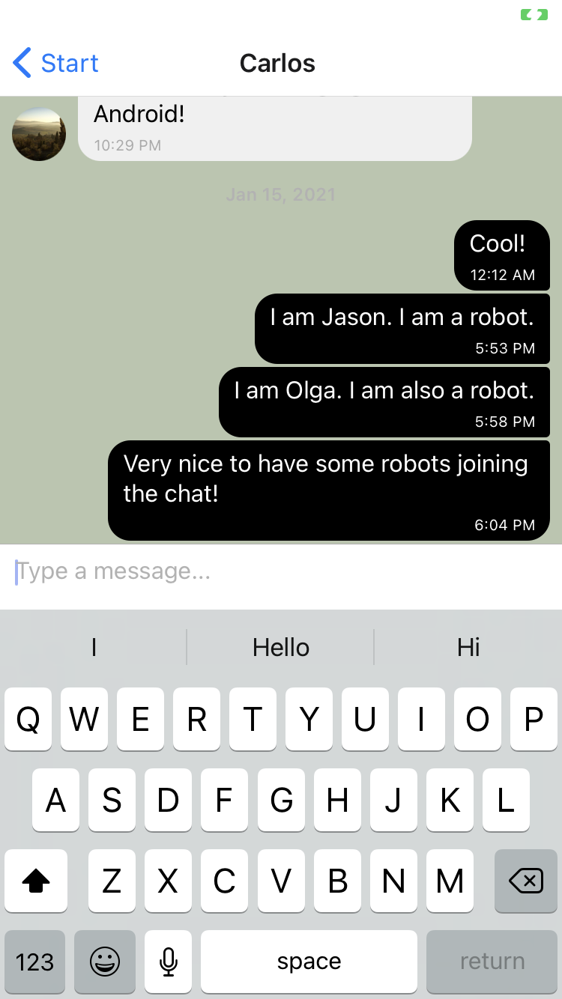

myFlix Angular client - this project is a small movie app built with the Angular framework. Features of the app include:
The backend of this app is based on the existing myFlix REST API/database
List of technologies: Angular, Angular-CLI
Live version of the AppmyFlix client - this project is a small movie app built with React. Features of the app include:
The backend of this app is based on the existing myFlix REST API/database
List of technologies: React, React Redux, Parcel
Live version of the AppThis movie API is the backend API for the myFlix application, a movie directory website.
The movie API is a REST API (Representational State Transfer), and the complete server side includes server, business logic, and business layer of the application.
The architected database is built using JavaScript, Node.js, Express, and MongoDB; the API will be accessed via commonly used HTTP methods such as GET, POST, PUT, and DELETE.
HTTP and JWT authentication methods are used for the movie API. This API is hosted via Heroku.
List of technologies: JavaScript, Node.js, Express, MongoDB, Mongoose, Heroku, Postman
Github Repository (including README with instructions on how to get started with Postman)The chat app is a React Native mobile Application built using Expo, Gifted Chat, and Google Firebase.
This chat app runs in real-time, for Android and iOS. Key features of the app include:
List of technologies: React Native, Expo, Gifted-Chat library, Google Firebase
Github Repository (including README with instructions on how to get started with Expo) 

Meat App (a.k.a. Meet App) - this project's objective is to build a serverless, progressive web app (PWA) with React while using a test driven development (TDD) technique.
The Meat App uses the Google Calendar API to fetch upcoming events. Users will be able to filter events by city, show/hide event details, specify the number of events.
Furthermore, users can use the app offline. The app also provides users with visual representations of their searches in the form of graphs. The graphs are built with the Rechart library
List of technologies: React, Google Calendar API, AWS Lambda, Recharts
Github RepositorySmall web application written with JavaScript, HTML, and CSS. Loads data from external API and enables viewing of details for individual Pokemon upon user click.
Live version of the App